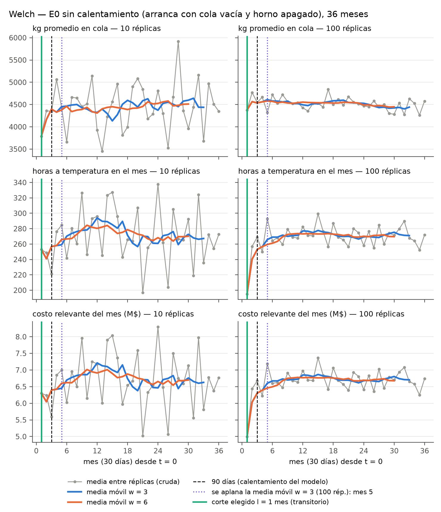
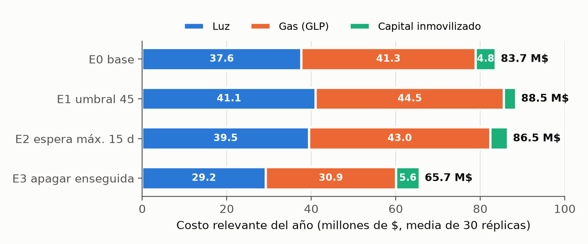
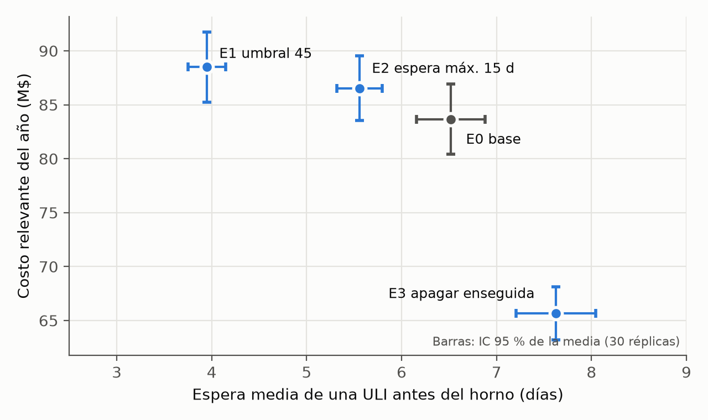

Si tenés 5 minutos: leé esta página y la parte 3. Si tenés 30: todo.
| ULI | "Unidad de transporte interno": un cajón de ~140 kg de tornillos ya estampados, laminados y lavados. En el horno se vuelca sobre la cinta, de a un cajón por vez. Es la entidad del modelo. |
| Horno | Eléctrico, de cinta continua, 27 resistencias. Hace cementación + temple (endurece la superficie del tornillo). Tiene un generador que quema GLP (propano) para la atmósfera. |
| Campaña | El período entre que se prende y se apaga. No es una entidad: es un estado del horno. |
| Umbral | Cuántas ULI tienen que estar esperando para prenderlo. Hoy: ~79 (el encargado dice 70-80). |
Llegan ~5 ULI por día y el horno puede tratar 17: está subutilizado (procesa el 29 % del año). Por eso se prende por campañas.
Cuando la cola llega a 79 se prende. Mientras calienta, siguen llegando ULI. Después carga una cada 85 min y también carga las que llegan durante la campaña (lo confirmó el encargado el 07/10). Cuando se vacía la cola, lo deja caliente hasta 48 h "por si llega algo". Si no llega nada, lo apaga.
| Regla | Umbral | Espera máxima | Caliente en vacío | Idea | |
|---|---|---|---|---|---|
| E0 | Regla actual | 79 | — | 48 h | La base: el sistema tal como está hoy. |
| E1 | Umbral bajo | 45 | — | 48 h | Prender antes para que el material espere menos. |
| E2 | Espera máxima | 79 | 15 días | 48 h | Si la ULI más vieja ya lleva 15 días, se prende igual. |
| E3 | Apagar enseguida | 79 | — | 0 h | No esperarlo caliente: se apaga apenas se vacía la cola. |
En los cuatro, si llega un pedido urgente el horno se prende aunque no haya 79 (pasa ~4-5 veces por año).
Tenemos el registro real de un año: qué día se lavó cada ULI, cuánto pesaba y cuándo entró al horno. Lo más simple sería "pasar la película" de ese año con otra regla. Pero eso es una sola historia: si ese año justo hubo pocas urgencias o una semana rara, la conclusión depende de esa casualidad. Y la cátedra pide varias corridas y un test de medias. Por eso los datos reales se usan para armar unos "dados" que generan años parecidos al real, pero distintos entre sí.
Una bolsa con 52 papelitos, uno por cada semana real del registro. Cada lunes se saca uno al azar, se copia lo que pasó esa semana ("lunes 0 ULI, martes 9, miércoles 0, jueves 14, viernes 3") y se devuelve a la bolsa. La hora de cada ULI se sortea entre las 6 y las 22.
Se sortea de la distribución real de pesos de esas mismas ULI (media de 141 kg, mediana de 132 kg).
Una moneda muy cargada: 0,54 % de las ULI que llegan con el horno apagado son urgentes, sacado del registro (10 encendidos anticipados en 1.857 ULI).
Lo único que cambia entre escenarios es la regla: umbral 45 (E1), espera máxima de 15 días (E2) o 0 h caliente esperando (E3).
La computadora no simula minuto a minuto: salta de un evento al siguiente (llega una ULI, termina el calentamiento, sale una ULI…). Entre evento y evento no pasa nada, así que lo saltea. Por eso un año entero se simula en milisegundos, y en la animación lo frenamos para poder verlo. Es una simulación de eventos discretos.
Cuánto esperó cada ULI, cuántas horas estuvo el horno en cada estado y cuántas veces se prendió. Con eso calcula la plata usando los números de las facturas reales: kWh por día caliente y por encendido, tarifa marginal, kg de gas por día caliente y costo del capital al 2 % mensual.
La semilla decide qué papelitos salen: la 1 da un año, la 2 otro, la 30 otro. Son 30 años distintos y todos creíbles. A las cuatro reglas les tocan los mismos 30 años: el año 7 con E0 y el año 7 con E3 reciben exactamente las mismas ULI, el mismo día, con el mismo peso. La única diferencia es la regla.
Cada corrida descarta los primeros 90 días (el modelo arranca vacío y apagado, que no es lo normal) y mide 365.
Wait y no Queue?Un Queue deja pasar la ULI apenas el horno está libre. Pero el horno no solo tiene que estar libre: tiene que estar caliente.
Con Wait, una función (despachar()) decide si carga (solo en el estado Procesando) y cuál (urgentes primero, después la más vieja), y la libera con free().
Batch?Porque el horno no mete 80 ULI juntas: las trata de a una. Si agrupáramos en un lote de 80, perderíamos lo que queremos medir: que la primera ULI espera semanas y la última horas, y que las que llegan con el horno prendido se suman a la campaña.
estado y el statechart)| Estado | Entra cuando… | Sale cuando… |
|---|---|---|
| 0 Apagado | arranca el modelo; termina de enfriar | llega una ULI → Acumulando |
| 1 Acumulando | primera ULI en cola | cola ≥ umbral, o llega una urgente, o vence la espera máxima → Calentando |
| 2 Calentando | se prende | pasan 36 h → Procesando |
| 3 Procesando | llegó a temperatura | la cola queda vacía durante la espera en vacío (48 h en E0, 0 h en E3) → Enfriando |
| 4 Enfriando | fin de la campaña | pasan 48 h → Apagado |
semilla × 10 + k. Ninguno depende de lo que hace el horno.
Resultado: con la semilla 7, los cuatro escenarios reciben exactamente las mismas ULI a la misma hora. Lo único que cambia es la regla. Eso es lo que permite comparar "apareado" (parte 3).
| Entrada | Valor | Fuente real y cómo se usó |
|---|---|---|
| Llegadas de ULI | 33,6 por semana | Seguimiento de ULI del sistema de gestión (11.353 ULI, 2024-2026); se usan los últimos 12 meses. Bootstrap por semanas: cada lunes el modelo sortea una de las 52 semanas reales y la repite. ¿Por qué no una distribución teórica? Porque el 49 % de los días hábiles no se lava nada, hay picos de 10-20 y los días de una misma semana están correlacionados (0,43). Ninguna Poisson ni binomial negativa respeta eso. |
| Peso por ULI | media 140,9 kg | Distribución empírica (101 cuantiles) de las mismas ULI, muestreada por transformada inversa. |
| Umbral | 79 ULI | Promedio de la cola al encender en las campañas largas reales (el encargado dijo 70-80: coincide). |
| Urgencias | 0,54 % | 10 encendidos anticipados reales / 1.857 ULI que llegaron con el horno apagado. |
| Luz | 2.402 kWh/día caliente + 2.303 kWh/encendido | Regresión de las facturas de luz del medidor exclusivo del horno (R² = 0,90). Tarifa marginal 102 $/kWh (pendiente importe vs. kWh, R² = 0,95): el cargo fijo de potencia se paga igual con cualquier regla, no se cuenta. |
| Gas (GLP) | 130 kg/día caliente | Facturas de YPF Gas + estadística de compras 2024-2026 (R² = 0,92); 2.250 $/kg con impuestos. |
| Capital parado | 4.467 $/kg al 2 % mensual | Lista de precios × factor de costo, ponderado por la mezcla; tasa que usa la empresa. Es una cota superior. |
Todos los números están en el modelo como parámetros y se pueden mirar en AnyLogic. Los datos crudos de la empresa no están en el repo (quedaron en una carpeta local ignorada): solo los agregados.
Si ponemos umbral 1, calentamiento y enfriamiento 0, llegadas Poisson (λ = 0,7/h) y ciclo exponencial (μ = 1/h), el horno se convierte en una cola M/M/1, que tiene fórmula. Si el modelo está bien programado, tiene que dar lo de la fórmula:
| Medida | Modelo | Fórmula | Error |
|---|---|---|---|
| Lq = ρ²/(1−ρ) (ULI en cola) | 1,632 | 1,633 | −0,09 % |
| W = 1/(μ−λ) (horas en el sistema) | 3,331 | 3,333 | −0,09 % |
| ρ = λ/μ (utilización) | 0,700 | 0,700 | −0,02 % |
| Medida | Real | Modelo | Error | Tolerancia | |
|---|---|---|---|---|---|
| Toneladas tratadas por mes | 21,6 | 21,1 | −2,5 % | 10 % | OK |
| Duración de la campaña (días) | 9,82 | 9,68 | −1,4 % | 10 % | OK |
| Espera media antes del horno (días) | 7,38 | 6,52 | −11,7 % | 15 % | OK |
| kWh del horno por mes | 38.000 | 33.500 | −11,8 % | 15 % | OK |
| Campañas por mes | 0,94 | 1,08 | +15,3 % | 10 % | fuera |
| ULI por campaña | 114 | 139 | +21,9 % | 10 % | fuera, no signif. |
El horno no tiene un "fin del día" natural. Cada corrida descarta un calentamiento (el modelo arranca vacío y apagado, lo que no es típico) y después mide 365 días.
Pilotos de 3 años sin calentamiento, promediados entre réplicas mes a mes y suavizados con media móvil. Solo el mes 1 está bajo (la primera campaña recién arranca al día 16). El modelo descarta 90 días, tres veces eso.
Con semillas 1 a 30, las mismas en los cuatro escenarios. En AnyLogic es el experimento CorridasE0E3 (Parameters Variation con la semilla como parámetro).

Tomemos la semilla 7. Los cuatro escenarios reciben exactamente las mismas ULI. Costo del año:
| Semilla 7 | E0 | E3 | D = E3 − E0 |
|---|---|---|---|
| Costo del año | 101,7 M$ | 82,2 M$ | −19,5 M$ |
Eso se repite para las 30 semillas: 30 diferencias D₁…D₃₀. Después:
Para E3 − E0 da −18,0 ± 1,8 M$: el intervalo va de −19,8 a −16,2. No contiene al 0 → la diferencia es significativa.


| Contra E0 (98,3 %) | Costo M$/año | Espera (días) |
|---|---|---|
| E1 umbral 45 | +4,8 ± 1,7 | −2,6 ± 0,4 |
| E2 espera máx. | +2,9 ± 0,8 | −1,0 ± 0,4 |
| E3 apagar ya | −18,0 ± 1,8 | +1,1 ± 0,3 |
Todas las diferencias son significativas (ningún intervalo contiene al 0).
Prender antes significa más encendidos (16 por año en vez de 13) y más tiempo caliente con poca carga. Se ahorra algo de capital parado (1,9 M$ en E1), pero se gasta mucho más en energía (6,7 M$). Solo convendría si entregar más rápido valiera más de 3-5 M$ por año (eso lo mediría la Etapa 2, que queda como trabajo futuro).
En E0 el horno está caliente el 38,7 % del año pero procesando solo el 29 %: una cuarta parte del tiempo caliente está esperando vacío. E3 elimina eso: unas 850 horas menos de horno caliente por año. A cambio, la ULI que llega justo después de apagarlo espera a la próxima campaña (+1,1 días de media, 1,3 encendidos más por año).
Los precios no cambian lo que pasa en la simulación (cuándo se prende el horno, cuánto espera cada ULI): solo entran en la cuenta del final. Por eso se recalcula el costo con otros valores sobre las mismas 120 corridas, de forma exacta.
| Caso | E3 − E0 (M$/año) |
|---|---|
| Base | −18,0 ± 1,8 |
| Consumo por encendido = 0 / = techo teórico (5.220 kWh) | −18,3 / −17,6 |
| GLP 100 kg/día en vez de 130 | −15,6 ± 1,6 |
| Tarifa promedio con cargo fijo (290 $/kWh) | −33,5 ± 3,3 |
| Capital al 1 % / al 4 % mensual | −18,4 / −17,2 |
| Desgaste de 1 M$ por cada encendido | −16,7 ± 1,7 |
En el paper van implícitos (la consigna lo pide así), pero en la defensa conviene saber dónde está cada uno.
CorridasE0E3.CaserHorno.alp y correr el experimento Visual (semilla 1, siempre la misma historia). Arrancar con Ver una campaña · 1 día/s.El guion completo, con fechas y qué decir de cada panel, está en guia-demo-visual.pdf.
CorridasE0E3: hecho el 07/11, idéntico al verificador.materias/SIM/entregables/TPI/caser/ (07-modelo-anylogic.md, 08-validacion-etapa1.md, informe/tpi-caser.tex, TPI_Caser_Resultados_Corridas.xlsx). Números de las 120 corridas de AnyLogic del 07/11 (idénticas byte a byte a las del verificador).